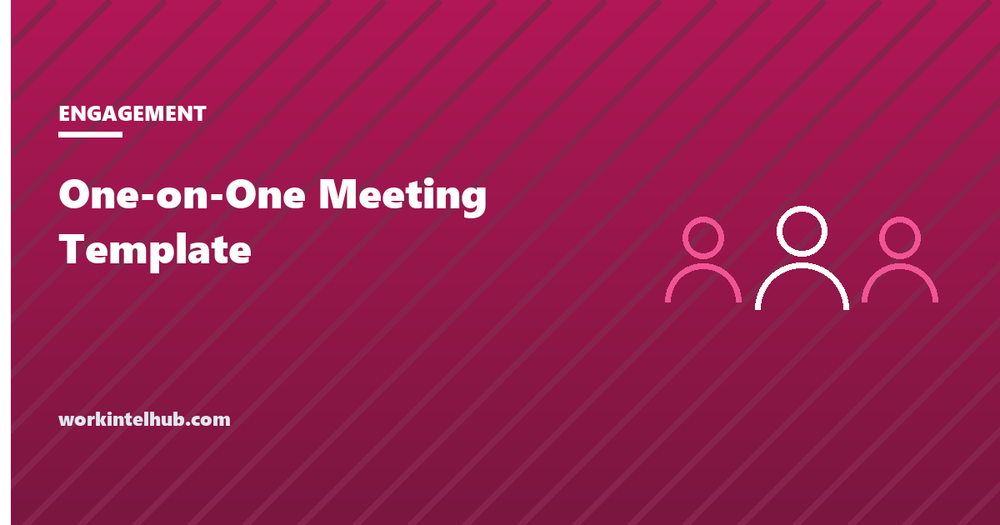

One-on-One Meeting Template

A one-on-one is a recurring, private meeting between a manager and one direct report, whose agenda belongs to the report. It is the single most reliable retention tool a manager has, and the most commonly wasted, because without a structure it becomes a status update the manager could have read in a tracker.
The template below is a 45-minute agenda in six parts, with questions for each. Build the version that fits, then read the rules, which matter more than the questions.
Build the agenda
Check-in (5 minutes)
Their agenda (15 minutes)
Work and priorities (10 minutes)
Feedback both ways (5 minutes)
Growth (monthly)
Close (5 minutes)
The timings in the group headings assume 45 minutes. In a 30-minute version drop the growth group to monthly and halve the rest. The agenda belongs in a shared document both people edit before the meeting.
Six rules that matter more than the template
- The report's items come first. The manager's items go last and get cut if time runs out. The meeting exists for the report; the manager has other ways to talk to them.
- It is not a status update. Progress on tasks belongs in whatever tracker you use. If the one-on-one is where the manager learns what happened, the tracker is broken or the manager is not reading it.
- Never cancel; reschedule. A cancelled one-on-one says the report is the lowest priority on the calendar. If it must move, move it the same week.
- Same document every time. A shared running document, both people add to it before the meeting, action items at the bottom with owners. The next meeting starts by reading the last one's actions.
- Feedback goes both ways, and the manager asks first. "What could I do differently?" asked every time, with a real answer acted on once, changes what the report is willing to say.
- Growth is a standing item, not an annual one. Monthly is enough. The performance review should contain nothing the report has not heard in a one-on-one.
Cadence and length
| Situation | Cadence | Length |
|---|---|---|
| New report, first 90 days | Weekly | 30 to 45 minutes |
| Established report, stable work | Fortnightly | 45 minutes |
| Senior report running their own team | Fortnightly or monthly | 60 minutes |
| Report in difficulty or on a plan | Weekly | 30 minutes, plus the plan's own check-ins |
| Remote report | Weekly | 30 minutes, video on |
Remote reports need the higher cadence because the incidental conversations that carry information in an office do not happen. Our guide to managing remote work without wrecking trust covers the rest of that gap.
What to listen for
The one-on-one is where the early signals in our burnout guide get a voice. Three things worth noticing across several meetings rather than in any one:
- The report stops bringing items. An empty "what do you want to talk about" three meetings running means either everything is fine or they have stopped believing the meeting changes anything. Ask which.
- Blockers repeat. The same dependency, the same tool, the same person, raised again. Either you did not act, or you could not, and the report needs to know which.
- The workload answer drifts up. "Busy but fine" to "a lot" to "I am managing" is a trend, and it is the point at which the stay interview questions are worth asking directly.
Key takeaways
- A one-on-one is the report's meeting. Their items first, the manager's last and cut if needed.
- It is not a status update. If the manager learns what happened here, the tracker is failing.
- Reschedule, never cancel. A shared running document with owned action items carries the meeting from one to the next.
- The manager asks for feedback first, every time, and visibly acts on it once.
- Weekly for new, remote or struggling reports; fortnightly for established ones; 30 to 60 minutes by seniority.
- Watch for empty agendas, repeated blockers and a workload answer that drifts upward across meetings.
Frequently asked questions
What should a one-on-one meeting agenda include?
A short check-in, the report's own items, the two or three priorities before the next meeting, feedback in both directions, a monthly growth conversation, and a close that records agreed actions with owners. The report's items come first and status updates stay out.
How long should a one-on-one be?
Thirty to sixty minutes depending on seniority and situation. Forty-five minutes fortnightly suits most established reports; new, remote or struggling reports need weekly meetings, which can be shorter.
Who sets the agenda for a one-on-one?
The report, primarily. Both people add items to a shared document before the meeting, and the report's items are discussed first. The manager's items go last so they are the ones cut if time runs short.
What questions should a manager ask in a one-on-one?
Questions that surface what the report would not volunteer: what is blocked and what they need, what they have been putting off, where the workload sits, what the manager could do differently, and what they want to learn next. The builder above has 25 of them grouped by purpose.
Should one-on-ones be used for performance reviews?
No, but the review should contain nothing the report has not already heard in one. Feedback belongs in the one-on-one as it happens; the review summarises it. A surprise in a review is a failure of the one-on-ones before it.
What if the employee has nothing to discuss?
Ask whether that is because things are genuinely fine or because they have stopped expecting the meeting to change anything. Three empty agendas in a row is a signal in itself. Keep the meeting and use it for the growth and feedback items.